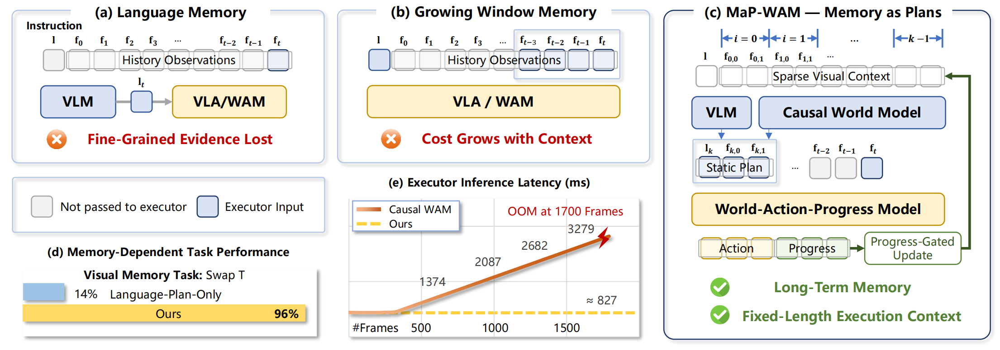
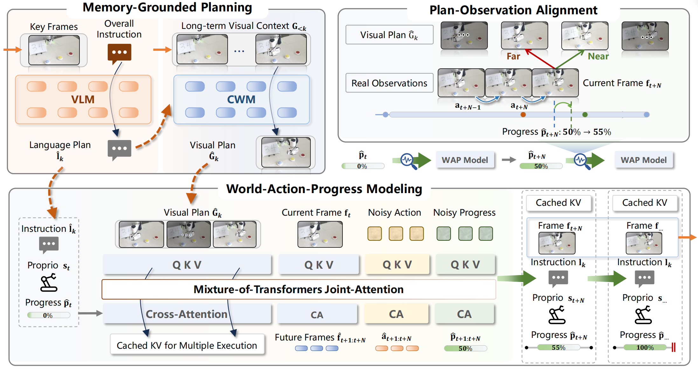

arXiv preprint · 2026
Memoryas Plans
World-Action Modeling with Memory-Grounded Planning
Long-horizon robot policies that remember visual evidence, turn it into a plan, and execute with a fixed context length.
- 83.3%
- RMBench success
- 78.0%
- Real-robot success
- O(1)
- Executor context
The core idea
Don’t replay the past.
Plan from it.
MaP-WAM keeps sparse visual evidence from completed segments, then compresses that history into the plan the executor actually needs.

(a) Language Memory compactly summarizes past interactions but may discard fine-grained visual evidence, as illustrated in (d), impairing performance on tasks that require precise visual memory.
(b) Growing Window Memory retains a window of recent observations, but extending the window to cover longer histories increases executor latency and GPU memory consumption, as shown in (e), resulting in a trade-off between history coverage and execution efficiency.
(c) MaP-WAM constructs long-term sparse visual context by retaining a few frames from each completed segment. A vision-language model and a causal world model then convert this context into a language-visual plan. Conditioned on this static plan, the World-Action-Progress model jointly predicts action chunks and progress, enabling adaptive segment transitions and memory updates from real observations while keeping the executor context length fixed.
Overview
Abstract
Mainstream robotic policies often adopt a Markovian formulation, but many complex real-world manipulation tasks are inherently non-Markovian, requiring long-horizon memory beyond the current observation. Existing memory mechanisms often rely on language summaries, growing visual windows, or their combinations, and may therefore lose fine-grained visual evidence or face a trade-off between history coverage and execution efficiency. We introduce MaP-WAM, a Memory-as-Plans framework that decomposes memory-dependent world-action modeling into memory-grounded planning and plan-conditioned execution, and uses long-term multimodal episodic context as planning-time evidence rather than repeatedly conditioning the executor on the full history. MaP-WAM represents memory as completed segment records containing language instructions and sparse visual context, and converts this episodic memory into compact plans comprising the next segment-level language plan and corresponding visual guidance. A World-Action-Progress (WAP) model executes each plan over an unknown duration by jointly predicting action chunks and corresponding execution progress at inference time, calibrating predicted progress through plan-observation alignment for adaptive segment transitions and closed-loop context updates. MaP-WAM keeps the executor context length fixed, while structured attention further enables key-value caching in both planning and execution. MaP-WAM achieves state-of-the-art performance on RMBench with an 83.3% success rate and attains 78.0% success on real-robot tasks, while maintaining approximately constant executor inference latency as task history grows.
Method
Framework

Results
RMBench
Success rates on RMBench. Task Memory Complexity (TMC): M(1) and M(n) denote tasks requiring one and multiple task-relevant past observations, respectively. Bold and underlined entries indicate the best and second-best results.
| Tasks | TMC | DP | π0.5 | X-VLA | Mem-0 | WLA-0 | LingBot-VA | MaP-WAM (Ours) |
|---|---|---|---|---|---|---|---|---|
| Observe and Pick Up | M(1) | 1% | 9% | 9% | 4% | - | 3% | 19% |
| Rearrange Blocks | M(1) | 0% | 13% | 13% | 89% | - | 100% | 66% |
| Put Back Block | M(1) | 0% | 11% | 18% | 90% | - | 100% | 100% |
| Swap Blocks | M(1) | 11% | 24% | 16% | 67% | - | 99% | 97% |
| Swap T | M(1) | 20% | 15% | 3% | 14% | - | 88% | 96% |
| Battery Try | M(n) | 10% | 16% | 26% | 28% | 45% | 41% | 82% |
| Blocks Ranking Try | M(n) | 10% | 6% | 1% | 18% | 23% | 100% | 94% |
| Cover Blocks | M(n) | 0% | 0% | 2% | 68% | 84% | 79% | 100% |
| Press Button | M(n) | 0% | 0% | 0% | 0% | 74% | 84% | 96% |
| Total Average | - | 5.8% | 10.4% | 9.8% | 42.0% | - | 77.1% | 83.3% |
Citation
BibTeX
@article{mapwam,
author = {Sizhe Zhao and Haozhe Xie and Weiyu Zhao and Chenchu Zhang and
Huan Wang and Chenyang Wang and Qinglin Liu and Shengping Zhang},
title = {{Memory as Plans:} World-Action Modeling with Memory-Grounded Planning},
journal = {arXiv 2609.11561},
year = {2026}
}